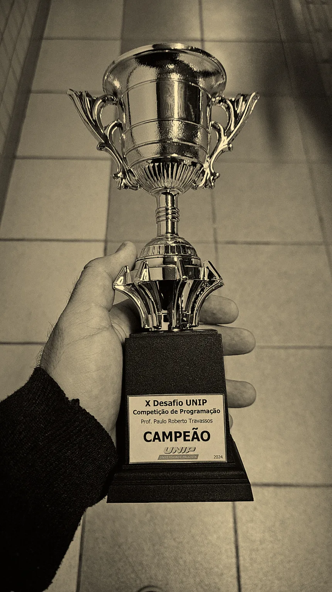

Minhas primeiras páginas com HTML e CSS. É o ponto de partida da evolução que aparece nos projetos seguintes.
- HTML
- CSS
Estudante de Ciência da Computação na Universidade Paulista. Escrevo front-end e back-end, estudo modelagem de dados e procuro meu primeiro estágio como desenvolvedor.
Sou estudante de Ciência da Computação na Universidade Paulista, em São José dos Campos – SP. Minha trajetória começou no Quartel, onde atuei por um ano na área de Comunicações, em Caçapava.
Depois disso, iniciei a faculdade dando continuidade pela área de tecnologia e comecei meus estudos em programação pelo front-end, com o passar dos semestres, fui expandindo meus conhecimentos para áreas como back-end, banco de dados, Inteligência Artificial, entre outras.
Atualmente, estou em busca da minha primeira oportunidade de estágio e no futuro, pretendo continuar minha formação com uma pós-graduação em Inteligência Artificial e Cibersegurança na Pontifícia Universidade Católica (PUC).
Meus projetos concluídos e os que estão em desenvolvimento, do primeiro contato com front-end até hoje.
Minhas primeiras páginas com HTML e CSS. É o ponto de partida da evolução que aparece nos projetos seguintes.
Implementação do algoritmo de criptografia RSA em Python: geração de chaves, cifragem e decifragem de mensagens.
O teste abaixo é uma versão adaptada do código original para rodar no site, com a mesma lógica e um visual mais amigável. O código em Python está no GitHub.
Sistema com front-end, Java e banco de dados que usa um mapa em CSV para gerar questões sobre o meio ambiente nas regiões do Brasil.
Pesquisa comparativa com Java e POO usando pilha, fila e outras estruturas, medindo desempenho e rapidez com entradas de 10, 100 e 1000 números.
Chat cliente-servidor em Python. O servidor aceita várias equipes ao mesmo tempo com threads e sockets TCP, autentica cada uma em um banco SQLite e repassa mensagens de texto e imagens para o destinatário. O cliente roda no terminal, com telas de conexão, login e conversa feitas em Textual.
O teste abaixo simula o funcionamento no navegador, com o mesmo protocolo do projeto: cada mensagem sai como tipo, destinatário, tamanho e conteúdo. O código original está no GitHub.
Desenvolvimento de um sistema de identificação e autenticação biométrica, projeto do semestre atual.
Site institucional para a Mitata Alimentos, distribuidora de carnes em São José dos Campos. Apresenta categorias e um catálogo de cortes com filtro, busca e paginação, além de uma seção para fornecimento a empresas. Os pedidos são feitos direto pelo WhatsApp.
Projeto pessoal em desenvolvimento. Detalhes em breve.

Eu e minha equipe, a Vinci, participamos de uma competição de programação durante a semana de tecnologia da universidade. O tema era manipulação de arquivos, sem acesso à internet, com questões das mais fáceis às mais complexas. Qualquer linguagem de programação era permitida, desde que o resultado final fosse o mais rápido.
Os pontos vinham de cada questão resolvida corretamente e do tempo de resposta, dentro de um prazo determinado. Diante de divergências e escolhas diferentes, organizamos as decisões como um debate em equipe para chegar à melhor solução. Dividi a equipe para deixar o trabalho mais dinâmico, e assim seguimos juntos até a conclusão do desafio.
Utilizamos Python para desenvolver e testar as soluções, buscando sempre uma forma mais eficiente de resolver cada questão. Durante a competição, precisamos lidar com erros, ajustar estratégias e administrar bem o tempo disponível. No final, conseguimos manter uma boa organização e trabalhar em conjunto até concluir o desafio. Como resultado, nossa equipe conquistou o primeiro lugar na competição.
Sem barrinha de porcentagem: ou eu entrego com isso, ou ainda estou aprendendo.
Clique em qualquer certificado para abrir o PDF original.
Nenhum certificado nesta categoria por enquanto.
Início profissional no começo de 2023, em Caçapava. Servi na 12ª Companhia de Comunicações Leve, onde atuei na área de comunicações e na manutenção das viaturas especializadas. Aprimorei competências como trabalho em equipe, responsabilidade, disciplina, organização, proatividade e comprometimento com resultados.
Depois de concluir o serviço militar no começo de 2024, iniciei a faculdade. Nesse ano letivo aprendi novas linguagens e aprimorei a lógica de programação, fui campeão de um desafio de programação e fiz projetos significativos para minha carreira.
Banco de dados, notação de James Martin, protocolos e redes, TCP e TCP/IP, entre outros. Foi o ano em que passei a entender como os sistemas se organizam por dentro: da modelagem dos dados até a forma como a informação trafega entre máquinas.
Mais projetos profissionais e freelances, junto com estudos avançados em imagens e processamento, cálculo computacional, entre outros. Comecei a atender clientes reais, lidando com prazos, requisitos e entregas, e a aplicar na prática o que venho estudando na faculdade.
Vaga de estágio, projeto freelance ou só uma troca de ideia sobre tecnologia: pode chamar. Respondo em até dois dias.
Não carregou? Abra o arquivo em uma nova aba.